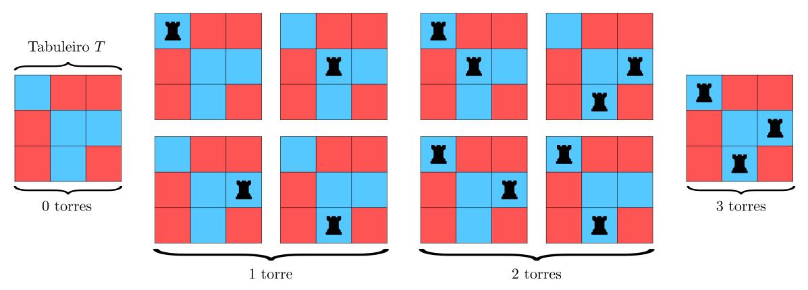
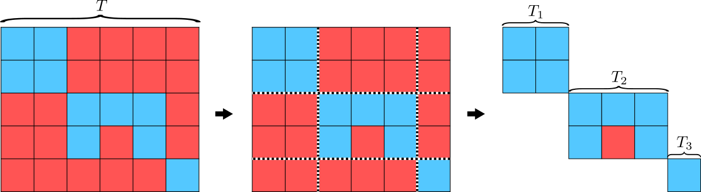
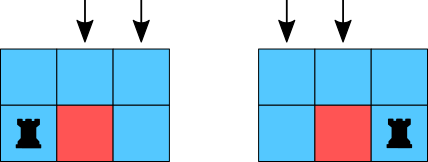
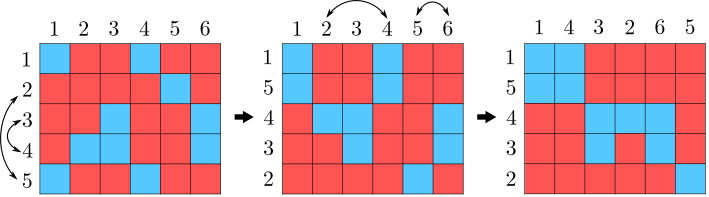

Um polinômio de torre é um polinômio gerador do número de maneiras de colocar torres não atacantes em um tabuleiro, ou seja, quaisquer duas torres não podem estar na mesma linha ou coluna.
Na Figura Figura 2.2, temos um tabuleiro \(3\times 3\) com algumas posições proibidas e todas as formas de distribuir de zero a três torres não atacantes no tabuleiro.

Figura2.2.Tabuleiro \(T\) e todas as formas de colocar torres não atacantes.
Definição2.3.
Seja \(T\) um tabuleiro \(m\times n\text{,}\) o polinômio de torre de \(T\) é definido como
Para estabelecer o polinômio de torre de \(T\) vamos obter os coeficientes \(r_i(T)\text{,}\) com \(i\in \{0,1,2,3\}\text{.}\) Note que não é possível colocar mais que 3 torres não atacantes em \(T\text{.}\) De acordo com a Figura 2.2, \(r_0(T) = 1\text{,}\)\(r_1(T) = 4\text{,}\)\(r_2(T) = 4\) e \(r_3(T) = 1\text{.}\) Logo,
Esta seção possui definições e resultados que facilitam o cálculo de polinômios de torre, bem como, exemplos da aplicação destes resultados. Por fim, apresentamos o Teorema 2.18, que é essencial na aplicação dessa teoria para resolução de problemas de permutações com restrições, o que é abordado na próxima seção.
Teorema2.5.
Seja \(T\) um tabuleiro \(m\times n\text{,}\) sem restrições. O polinômio de torre de \(T\) é dado por:
Para determinar os coeficientes dos termos \(x^k\) de \(R(x,T)\text{,}\) começamos contando o número de maneiras de selecionar \(k\) linhas e \(k\) colunas em \(T\text{.}\) Temos \(\binom{m}{k}\) maneiras de escolher \(k\) linhas e \(\binom{n}{k}\) maneiras de escolher \(k\) colunas. Para cada escolha das \(k\) linhas e \(k\) colunas, temos uma equivalência com um tabuleiro \(k\times k\text{,}\) no qual, vamos contar o número de maneiras de colocar as \(k\) torres não atacantes. Temos \(k!\) maneiras de fazer isto, e portanto, o polinômio de torre de \(T\) é
Um subtabuleiro de \(T\) é qualquer subconjunto retangular de quadrados de \(T\text{.}\)
Os subtabuleiros \(T_1, T_2, \ldots, T_k\text{,}\) de \(T\text{,}\) são disjuntos, se nenhum quadrado de \(T_i\) está na mesma linha ou coluna que os quadrados de \(T_j\text{,}\) para \(1\leq i, j\leq k\text{,}\) com \(i\neq j\text{.}\)
O tabuleiro \(T\) pode ser dividido em subtabuleiros disjuntos\(T_1, T_2, \ldots, T_k\text{,}\) se os subtabuleiros \(T_1, T_2, \ldots, T_k\) são disjuntos e se todos os quadrados de \(T\) que não estão nos subtabuleiros \(T_i\text{,}\) com \(i=1, 2, \ldots, k\text{,}\) são quadrados proibidos.
Exemplo2.7.
Na Figura 2.8 temos um tabuleiro \(T\) e uma subdivisão em subtabuleiros disjuntos \(T_1, T_2\) e \(T_3\text{.}\) Note que todos os quadrados de \(T\) que não estão em \(T_1, T_2\) ou \(T_3\) são quadrados proibidos.

Figura2.8.Tabuleiro \(T\) e divisão de \(T\) nos subtabuleiros disjuntos \(T_1, T_2\) e \(T_3\text{.}\)
Teorema2.9.
O polinômio de torre de um tabuleiro \(T\text{,}\) dividido nos subtabuleiros disjuntos \(T_1, T_2, \ldots, T_k\text{,}\) é dado pelo produto dos polinômios de torre dos subtabuleiros \(T_1, T_2, \ldots, T_k\text{,}\) ou seja:
Vamos mostrar o caso \(k=2\text{,}\) os demais casos podem ser obtidos tomando indução em \(k\text{.}\)
Seja \(T\) um tabuleiro dividido nos subtabuleiros disjuntos \(T_1\) e \(T_2\text{.}\) Para colocar \(k\) torres não atacantes em \(T\text{,}\) podemos colocar \(r_{k-i}(T_1)\text{,}\) com \(i=0, 1, \ldots, k\text{,}\) torres não atacantes em \(T_1\) e \(r_{i}(T_2)\) torres não atacantes em \(T_2\text{.}\) Isto posto, dados duas torres quaisquer em \(T\text{,}\) uma não pode atacar a outra. Portanto, o número de maneiras de colocar \(k\) torres não atacantes em \(T\) é dado por
Para encontrar o polinômio de torre de \(T\text{,}\) obtemos individualmente os polinômios de torre dos tabuleiros \(T_1, T_2\) e \(T_3\) e depois usamos o Teorema 2.9. Pelo Teorema 2.5,
O coeficiente de \(x^2\) do tabuleiro \(T_2\) é 4, pois, colocando uma torre na posição \((2,1)\text{,}\) temos duas maneiras de colocar uma torre na primeira linha (posições \((1,2)\) e \((1,3)\)). Colocando uma torre na posição \((2,3)\text{,}\) também temos duas maneiras de colocar uma torre na primeira linha (posições \((1,1)\) e \((1,2)\)). Assim, no total são 4 possibilidades.

Figura2.11.Tabuleiro \(T_2\) e as indicações das 4 possibilidades de colocar duas torres.
O coeficiente de \(x\) é claramente 5, pois existem cinco quadrados permitidos e consequentemente 5 formas de colocar uma torre neste tabuleiro. Por fim, o coeficiente de \(x^0\) é 1, pois existe uma única maneira de deixar o tabuleiro vazio. Logo,
Sejam \(T\) e \(T'\) tabuleiros \(m \times n\text{,}\) tais que um pode ser obtido do outro permutando linhas ou colunas. Então \(T\) e \(T'\) possuem o mesmo polinômio de torre.
Permutando linhas e colunas, dados dois quadrados que estão inicialmente em linhas e colunas diferentes, eles ficarão em linhas e colunas diferentes e vice-versa. Portanto, existe uma bijeção entre as maneiras de colocar um determinado número de torres não atacantes no tabuleiro inicial e as formas de colocá-las no tabuleiro final. Logo, ambos tabuleiros têm os mesmos polinômios de torre.
Exemplo2.13.
Determine o polinômio de torre do tabuleiro \(B\text{,}\) definido pela Figura 2.14.
Pelo Teorema 2.12, os polinômios de torre de todos os tabuleiros da Figura 2.15 são iguais, pois, um pode ser obtido do outro permutando linhas ou colunas.

Figura2.15.Do tabuleiro \(B\) ao tabuleiro \(T\) da Figura 2.8.
No entanto, o polinômio de torre do tabuleiro \(T\text{,}\) o mais à direita da Figura 2.15 já foi calculado no Exemplo 2.10. Portanto,
Precisamos mostrar que para qualquer \(k\text{,}\) o coeficiente de \(x^k\) é igual para os dois lados da igualdade.
O coeficiente de \(x^k\) em \(R(x,T)\) é igual ao número de maneiras de colocar \(k\) torres não atacantes em \(T\text{,}\) sem usar o quadrado \(q_{ij}\text{,}\) mais o número de maneiras de colocar \(k\) torres não atacantes em \(T\text{,}\) usando \(q_{ij}\) todas as vezes. Como o quadrado \(q_{ij}\) será usado todas as vezes, essa parte é igual ao número de maneiras de colocar \(k-1\) torres não atacantes em \(T_2\text{.}\) Portanto,
Seja \(T\) um tabuleiro \(m \times n\) com posições proibidas \(\mathcal{F}\text{,}\) definimos o tabuleiro complementar de \(T\text{,}\) como o tabuleiro que tem as posições permitidas \(\mathcal{F}\text{.}\) Isto é, o que era permitido será proibido e vice-versa. De outra forma, os quadrados vermelhos ficarão azuis e os que são azuis ficarão vermelhos. Denotaremos o tabuleiro complementar de \(T\) por \(T^c\text{.}\) Observe que \((T^c)^c=T\text{.}\)
Teorema2.18.
Seja \(T\) um tabuleiro \(n\times n\text{,}\) então, o número de maneiras de colocar \(n\) torres não atacantes em \(T\) é dado por:
Considere \(L_k\text{,}\) com \(k=1, 2, \ldots, n\text{,}\) o conjunto das distribuições de \(n\) torres não atacantes em \(T\text{,}\) na qual, a torre da linha \(k\) está em uma posição proibida. Observe que
pois \(\#\left(\cup_{k=1}^n L_k\right)\) é o número de maneiras de colocar \(n\) torres não atacantes em \(T\) de modo que pelo menos uma torre ocupe uma posição proibida. Então, o valor do conjunto complementar é o número que procuramos, \(r_n(T)\text{.}\)
A cardinalidade do conjunto \(\left(\cup_{k=1}^n L_k\right)^c\) é igual ao número total de maneiras de colocar \(n\) torres não atacantes em \(T\text{,}\) ignorando as posições proibidas, menos \(\#\left(\bigcup_{k=1}^n L_k\right)\text{,}\) ou seja,
Precisamos calcular as cardinalidades dos conjuntos acima. A quantidade de elementos de \(L_k\) é o número de maneiras de colocar uma torre em uma posição proibida na linha \(k\) vezes \((n-1)!\text{.}\) O total de maneiras de colocar uma torre em uma posição proibida em \(T^c\) é \(r_1(T^c)\text{,}\) logo
Analogamente, na interseção de \(i\) conjuntos, \(L_{k_1}\cap \cdots \cap L_{k_i}\text{,}\) ficamos com \((n-i)!\) vezes \(r_i(T^c)\text{.}\) Portanto,